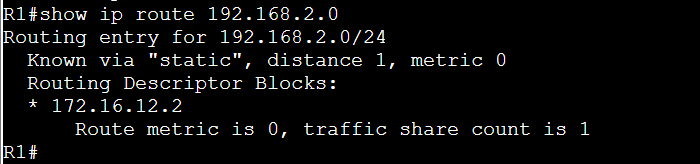
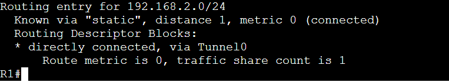
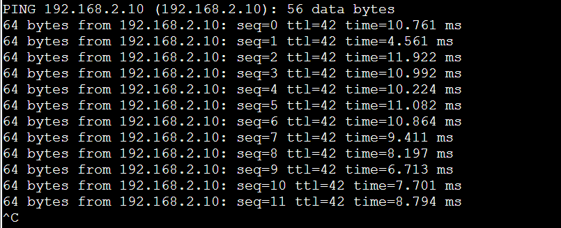
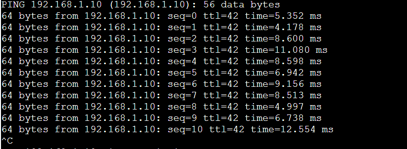
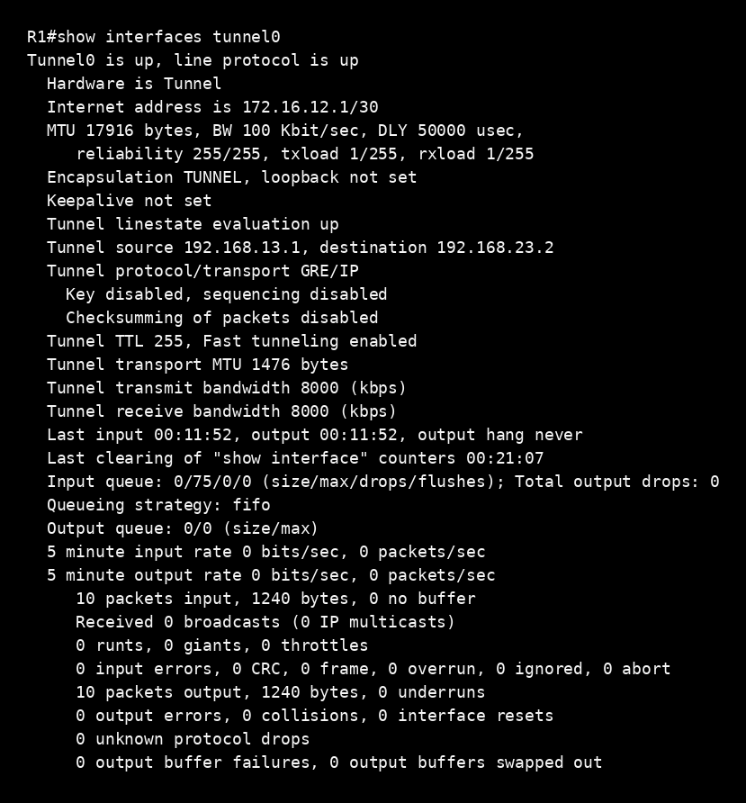

Objective
Separate underlay reachability from overlay forwarding.
I built a GRE tunnel between R1 and R2 across R3, established the routed underlay first, and then changed the remote-LAN routes to exit Tunnel0. The key verification combined interface-specific routes, traffic in both directions, and tunnel packet counters captured before and after the test.
| Underlay | R1 → R3 → R2 using 192.168.13.0/30 and 192.168.23.0/30 |
|---|---|
| GRE overlay | R1 Tunnel0 172.16.12.1/30 ↔ R2 Tunnel0 172.16.12.2/30 |
| Remote LANs | 192.168.1.0/24 at R1; 192.168.2.0/24 at R2 |
| Routing scope | Static routes; OSPF over GRE is a future phase, not part of this result |

Routing checkpoint
A successful ping was not enough.
Before the route rewrite, R1 reached 192.168.2.0/24 through a normal underlay next hop. Afterward, its route showed the remote LAN as directly connected, via Tunnel0. That made the intended forwarding decision visible before generating test traffic.


Traffic and counter validation
Bidirectional PC pings confirmed reachability. The stronger evidence came from the immediately following interface checks: R1's Tunnel0 counters increased by 23 packets in each direction, from 10 in / 10 out to 33 in / 33 out. R2 recorded 32 in / 33 out.
| Router | Before | After | Change |
|---|---|---|---|
| R1 Tunnel0 | 10 in / 10 out | 33 in / 33 out | +23 / +23 |
| R2 Tunnel0 | 10 in / 10 out | 32 in / 33 out | +22 / +23 |



Result
The route and the counters tell the same story.
The rewritten route directed remote-LAN traffic into Tunnel0, and the counters increased on both tunnel endpoints during the PC-to-PC exchange. Together, those observations support GRE encapsulation at one endpoint, transport over the R3 underlay, decapsulation at the far endpoint, and delivery to the remote LAN.
GRE provides logical abstraction here, not encryption or a performance improvement. The physical underlay remains the real transport.